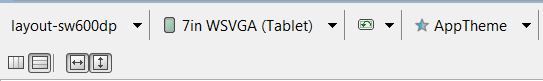

/* Моя кошка замечательно разбирается в программировании. Стоит мне объяснить проблему ей - и все становится ясно. */
John Robbins, Debugging Applications, Microsoft Press, 2000

/* Моя кошка замечательно разбирается в программировании. Стоит мне объяснить проблему ей - и все становится ясно. */
John Robbins, Debugging Applications, Microsoft Press, 2000
Устройства под Android можно условно разделить на две группы - телефоны и планшеты. До недавнего времени существовали две ветки развития платформы - версии 2.* и версии 3.*. С выходом Android 4.0 обе ветки были объединены и теперь везде используется единый код. Но пусть данное обстоятельство не вводит вас в заблуждение.
Разработка под планшеты очень сильно отличается от разработки под обычный смартфон. Для меня первый звоночек прозвучал, когда я выложил на Google Play простенькую программу для снятия показаний счётчика электроэнергии. Писалась программа для практики в учебных целях и была выложена в магазине приложений для изучения механизма работы этого самого магазина. Но неожиданно для меня несколько тысяч человек скачало программу и стали просить продолжить работу над ней. В статистике загрузок было видно, что очень много пользователей устанавливает приложение именно на планшет. И вот однажды один из пользователей программы прислал мне скриншот, где описывал свою проблему и просил меня подправить логику приложения. Когда я увидел этот скриншот, то чуть со стула не упал. Не ожидал, что впечатление от программы так может резко меняться от размеров. Но размер имеет значение!
Когда я запускал программу на маленьком телефоне, то всё выглядело достаточно аккуратно и изящно. А теперь возьмите в руки стандартную книгу, разверните её в альбомной ориентации и представьте себе кнопку, которая тянется по всей ширине книги. Жуткое зрелище.
Далее одна компания попросила сделать им программу специально под планшеты. Так как у меня не было на тот момент планшета, то я тестировал все изменения на телефоне. И тут тоже возникли проблемы. Если на телефоне расположение элементов казалось компактным, то на планшете либо оставалось много лишнего пространства, либо элементы казались слишком большими. Можно, конечно, было разрабатывать приложение только под планшет, руководствуюясь присылаемыми скриншотами. Но это не наш путь. Мне хотелось создать универсальную программу, которая была бы удобной и под телефон и под планшет. Так я начал изучать вопрос в этом направлении.
Средства разработки позволяют достаточно удобно создавать программу под разные форм-факторы. Но есть ряд особенностей, о которых нужно знать. Во-первых, дизайнер форм и эмулятор не совсем точно показывают размеры и взаимное расположение элементов. Необходимо всегда проверять конечный результат на реальном устройстве. Во-вторых, нужно грамотно настроить среду разработки под наши цели.
Существует специальный квалификатор large (res/layout-large и его производные layout-large-land и т.п.), который действует на устройства с экранами от 7 дюймов и выше. Сейчас считается устаревшим, так как некоторые устройства не совсем правильно определяли данный квалификатор. Часто в целях совместимости создают папку с данным квалификатором и копируют в него файлы из новых квалификаторов (или псевдонимы), о которых ниже.
Тоже самое относится к xlarge, который действует на устройства с диагональю экрана 10 дюймов.
В Android 3.2 и выше доступен квалификатор Smallest-width, сокращёно sw. Он позволяет определять экраны с заданной минимальной шириной в dp. Например, планшет с экраном 7 дюймов имеет минимальную ширину 600 dp, и если вы хотите, чтобы приложение работало на нём в двухпанельном режиме (а на меньших экранах в однопанельном), используйте два макета, но вместо квалификатора размера large укажите sw600dp. В таком случае на экранах, минимальная ширина которых составляет 600 dp, будет использоваться двухпанельный макет.
Далее речь пойдёт применительно к планшету на 7 дюймов с разрешением экрана 1024×600. Мы уже привыкли, что вся основная разметка содержится в файле activity_main, которая находится в папке res/layout. Отлично, начните с этого файла и набросайте макет для телефона. Теперь создайте новую папку res/layout-sw600dp/ и скопируйте в неё файл activity_main.xml. В этой папке будет находиться макет программы, специально разработанный с учетом семидюймового экрана. Теперь, в зависимости, где запускается программа, система сама автоматически выберет нужный макет и покажет его пользователю.
Также можно использовать квалификатор типа wXXXdp, где доступная ширина больше или равна XXX dp, и квалификатор типа hXXXdp, где доступная высота больше или равна XXX dp.
Следует учесть, что на Android-устройствах до версии 3.2 квалификатор sw600dp не будет работать, поэтому для них по-прежнему нужно использовать large и вам потребуется еще один файл с названием res/layout-large/main.xml, идентичный файлу res/layout-sw600dp/main.xml. Поэтому приходится дублировать оба файла с одинаковым содержанием.
Чтобы избежать дублирования файлов, используйте псевдонимы. Например, можно определить следующие макеты:
Добавляем новые папки с файлами:
<resources>
<item name="main" type="layout">@layout/main_twopanes</item>
</resources>
<resources>
<item name="main" type="layout">@layout/main_twopanes</item>
</resources>
Содержание последних двух файлов одинаково, но сами по себе они не определяют макет. Они служат для того, чтобы назначить файл main в качестве псевдонима main_twopanes. Так как в них используются селекторы large и sw600dp, они применяются к планшетам и телевизорам на платформе Android независимо от версии (для версий до 3.2 используется large, а для более новых – sw600dp).
Так как число устройств с разными экранами растёт, то приходится дополнительно адаптировать дизайн для маленьких экранов, планшетов на 7 и 10 дюймов, телевизоров. Вот примеры различных вариантов дизайна.
Каждый из этих макетов определен в XML-файле в каталоге res/layout/. Чтобы сопоставить их с определенными конфигурациями экрана, в приложении используются псевдонимы. Примеры можно посмотреть в документации (русский перевод).
Как с этим работать в Eclipse. Когда вы создадите файл в новой папке, то в верхней части IDE вы можете увидеть выпадающий список, позволяющий быстро переключаться между двумя файлами activity_main.xml. Изменения, которые вы делаете в одном файле, не переносятся в другой файл. Поэтому будьте внимательны. Если какие-то элементы должны совпадать, то нужно внести изменения в оба файла. Также рядом с этим выпадающим списком можно выбрать форм-фактор устройства, чтобы увидеть созданный макет визуально. Эта операция возможно только при работе с XML в графическом режиме.

Также необходимо создать несколько новых эмуляторов под ваши требования. Сразу хочу предупредить об одной проблеме, с которой сам столкнулся. Когда я попытался загружать программу в уже готовый эмулятор на 7 дюймов, он по-прежнему загружал разметку под обычный телефон. В конце концов я снёс все эмуляторы, перезагрузился и создал эмуляторы под нужные мне размеры заново. И тогда всё заработало.
Второй важный момент - указание размеров. Обычно мы храним значения размеров в файле res/values/dimens.xml. Текст, заданный для телефона, окажется слишком мелким для планшета. Поэтому аналогично, создаём альтернативный файл res/values-sw600dp/dimens.xml. Я также пробовал сохранить файл dimens.xml в папке res/values-v15 и у меня также всё работало. Честно говоря, не знаю, какой вариант правильный.
Третий важный момент, о котором нужно помнить - различия в железе. Например, в новом планшете Google Nexus 7 нет телефонного модуля и только одна фронтальная камера. Поэтому, в манифесте рекомендуется указывать, что программа требует наличия телефона или камеры, чтобы ваше приложение не было доступно в магазине приложений для пользователей, у которых нет телефона и камеры. Например:
<uses-feature android:name="android.hardware.camera"
android:required="false"/>
<uses-feature android:name="android.hardware.microphone"
android:required="true"/>
Т.е. ваша программа не требует наличия камеры, но обязывает иметь микрофон.
Не забывайте про возможность настройки манифеста для больших экранов.
Кстати, выяснил интересную особенность фильтрации по разрешениями для Nexus 7. Оказывается, для него отдельно следует добавлять строку с точным указанием dpi:
<screen android:screenSize="large" android:screenDensity="213" />
Делайте отступы 16dp как минимум от краёв экрана для текстов.
Длина строки не должна быть слишком большой. Максимум 100 символов, оптимальный вариант: 50-75.
ListView и меню не должны растягиваться на весь экран (используйте фрагменты).
Рекомендуемый размер для элементов экрана, работающих от пальца - 48dp (32dp как минимум).
Существуют планшеты с модулем, позволяющим принимать и отправлять SMS. Для них стоит установить разрешения:
<uses-permission android:name="android.permission.RECEIVE_SMS"></uses-permission>
<uses-permission android:name="android.permission.READ_SMS"></uses-permission>
<uses-permission android:name="android.permission.WRITE_SMS"></uses-permission>
<uses-feature android:name="android.hardware.telephony" android:required="false" />